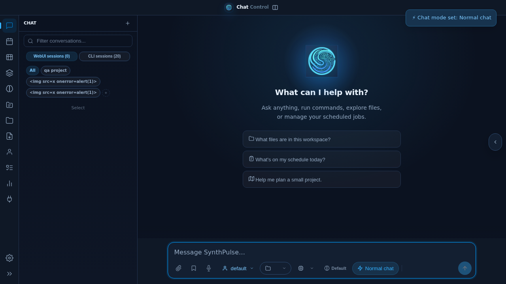
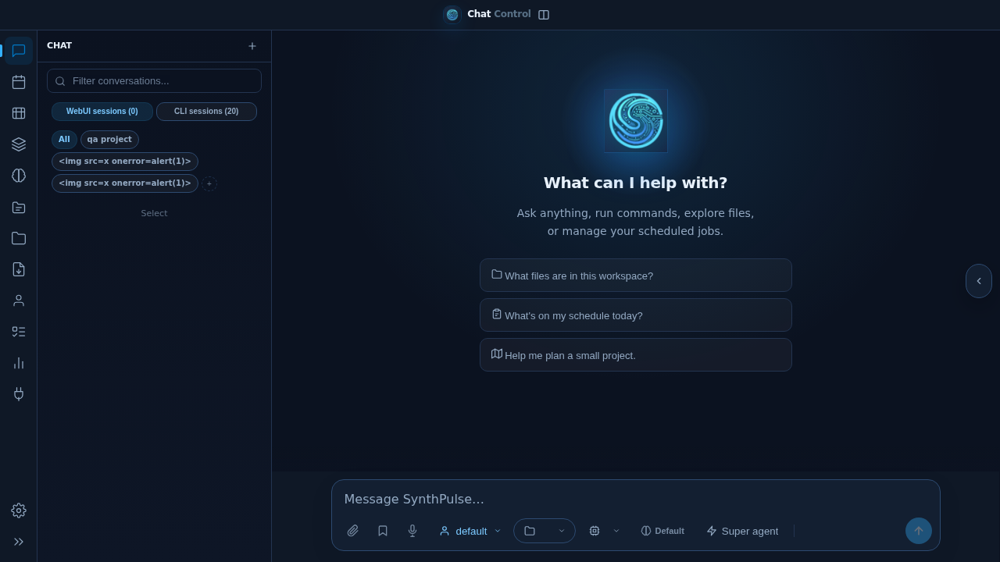
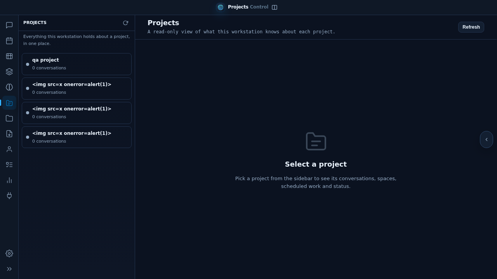
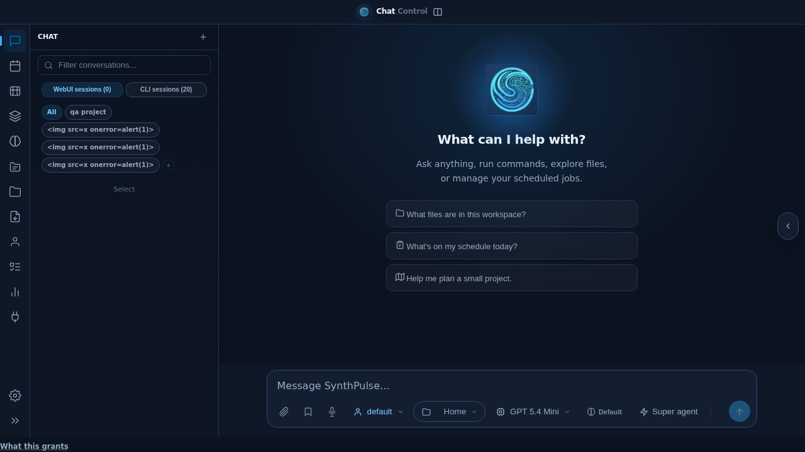
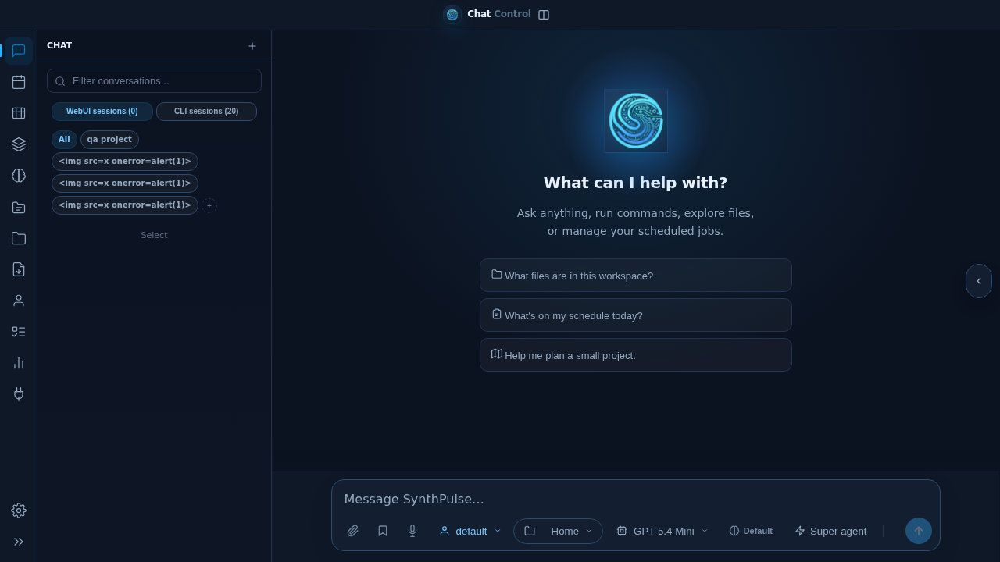

TC-CHATMODE-001
PASSED@critical new chats default to Super agent and can switch to Normal
- Actual result
- Acceptance criterion passed in the isolated browser run.
- Duration
- 2162 ms
- Regression
- None observed

Review of Normal chat mode, approval explanations, related approval suggestions and Projects hub.





